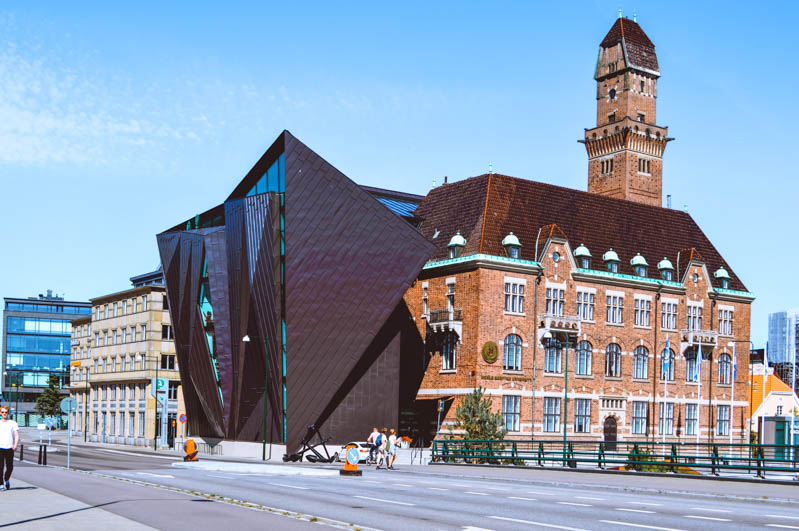

Fechas
30 ago – 2 sep 2026
4 días · 3 noches
Calculando cuánto falta…
Falta poquito
...prometido que no hay mas pistas pero... no vas a poder abrir este regalo hasta el día de tu cumplee. Lo podrás abrir a las 00:00 del 13 pero... me gustaría que me esperases para ver tu reacción, yo estaré sin cobertura desde el 12 por la tarde hasta que baje de la montaña. Si aguantas... espera a que te llame pls jeje love u
Hoy es un día muy especial
Este año es el primero que no te regalo algo material, eso lo sabes... toca por fin abrir tu regalito y descubrir a dónde vamos de viajee. Espero que te guste aunque... algo me dice que ya lo sabes por muchos mareos que te he dado jeje
El regalo se abre en
Un secreto que todavía no puede salir de la caja…
¡Ya es la hora! Abre tu regalo 🎁
Toca el regalo para abrirlo

30 ago – 2 sep 2026
4 días · 3 noches
Calculando cuánto falta…
Día 1 · Sábado 30 ago

Día 2 · Domingo 31 ago
Día 3 · Lunes 1 sep

Día 4 · Martes 2 sep